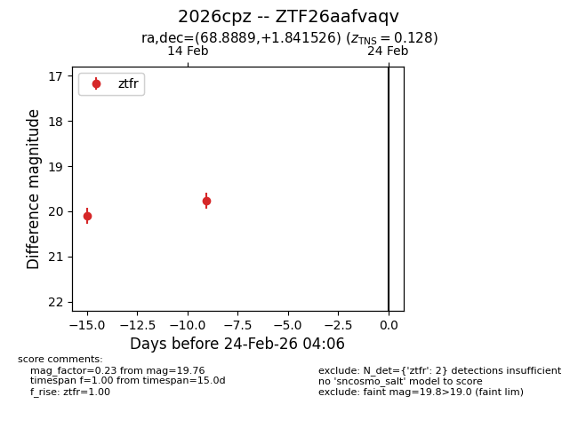
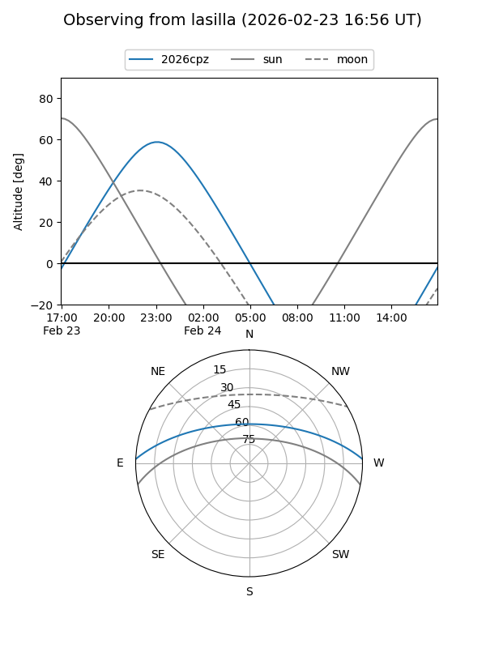
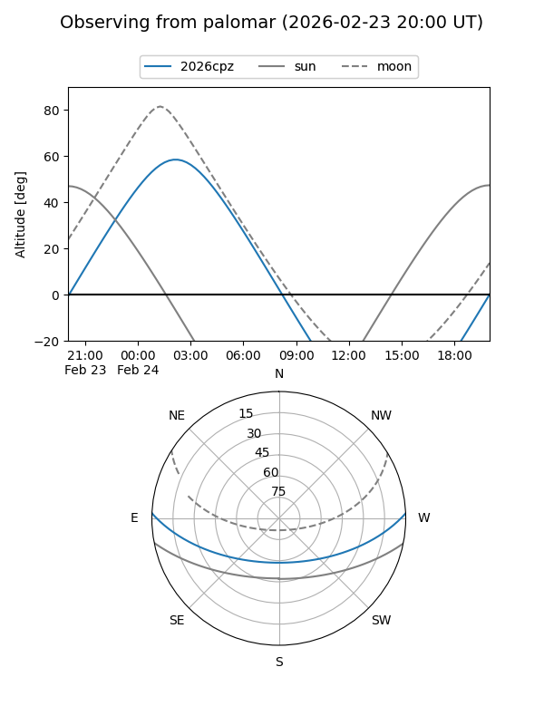

2026cpz
Target 2026cpz at 2026-02-24 09:08
Aliases and brokers:
FINK: link
Lasair: link
ALeRCE: link
TNS: link
YSE: link
alt names
ZTF26aafvaqv (ztf,fink_ztf)
2026cpz (tns,yse)
Coordinates:
equatorial (ra, dec) = 68.8889,+1.84153
equatorial (HMS+DMS) = 04:35:33.34,+01:50:29.49
galactic (l, b) = (194.0652,-28.84133)
Flags:
Photometry:
last ztfr=19.76
2 ztfr detections
Lightcurve

Visibility


Additional plots